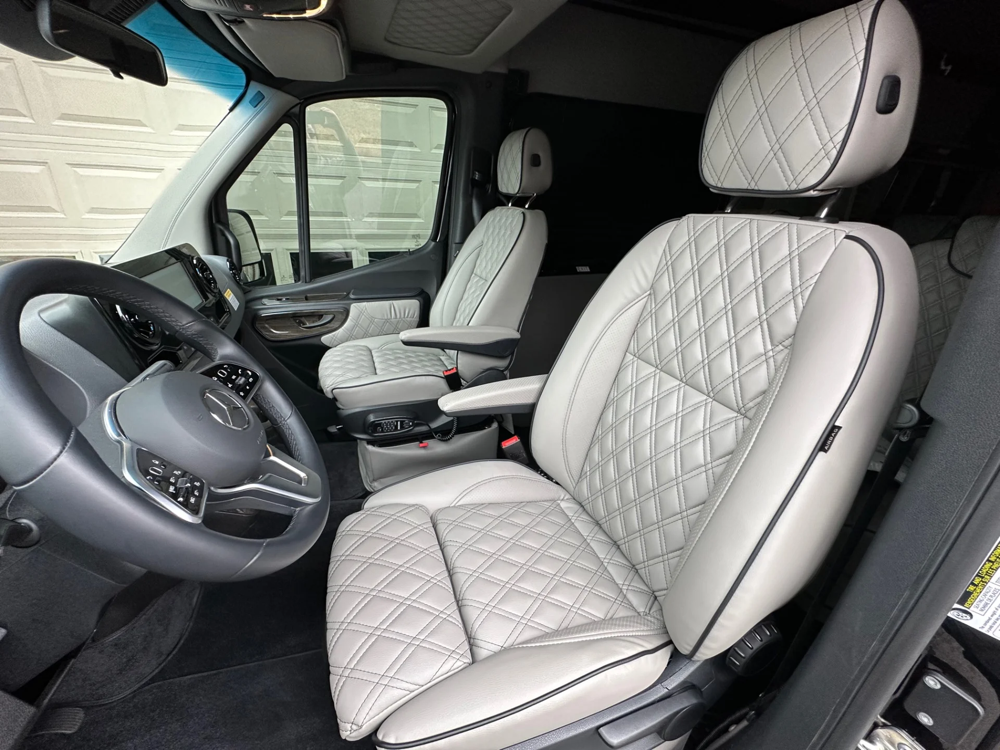
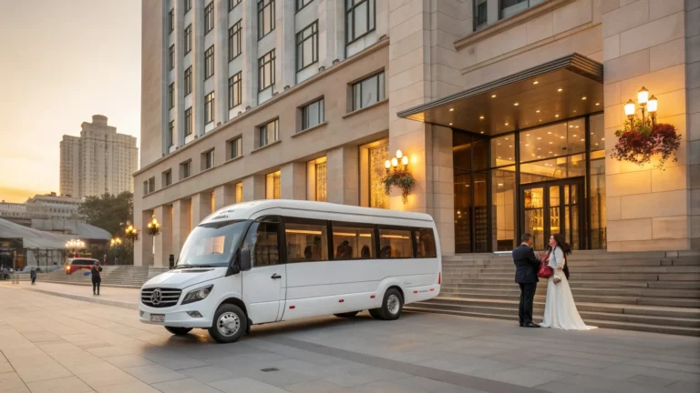

✓
Единый график
Маршрут и время подачи фиксируются до мероприятия.
Помогаем организовать развоз гостей, встречу родственников, поездку между локациями и возвращение после мероприятия без хаоса в расписании.
Посадочная страница закрывает коммерческий интент: человеку нужно быстро понять, подойдёт ли формат, сколько факторов влияет на цену и как оформить заявку без лишней переписки.

Дата, время подачи, маршрут, количество пассажиров, багаж, детские кресла и желаемый класс автомобиля.
Получить расчёт в WhatsAppМаршрут и время подачи фиксируются до мероприятия.
Можно запланировать ресторан, ЗАГС, фотосессию и обратный развоз.
Вместительный салон, кондиционер и место для вещей.
Согласуем позднее возвращение после банкета.
Собираем список адресов, время церемонии и банкета.
Считаем гостей по направлениям и выбираем класс транспорта.
Фиксируем маршрут, ответственного контактного человека и стоимость.

Комфортный минивэн для семьи, деловой поездки, трансфера из аэропорта и путешествий по Узбекистану.

Практичный микроавтобус для групп, экскурсий, трансферов и поездок за город.

Микроавтобус для больших групп, туристических маршрутов, мероприятий и междугородних поездок.
Да, для больших свадеб можно комбинировать минивэны и микроавтобусы.
Да, заранее согласуем время окончания, адреса и количество направлений.
Если водитель ждёт между этапами, ожидание лучше заранее включить в расчёт.
Мы не просим заполнять длинную форму: достаточно написать маршрут и дату. Менеджер уточнит детали и предложит подходящий автомобиль.

Аренда микроавтобуса на свадьбу: как рассчитать количество рейсов и машин, что включено в тариф, как избежать опозданий и лишних затрат.